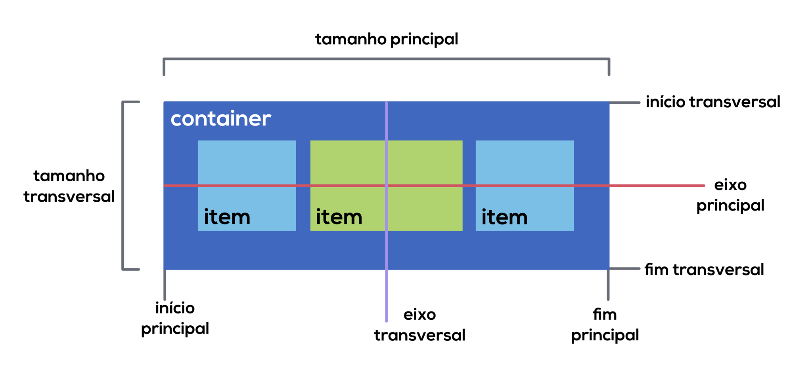

CSS Flexbox
O Flexbox organiza os elementos de uma página HTML dentro de um container de forma dinâmica, independente das suas dimensões, mantendo um layout flexível dentro do seu elemento pai (container) e reorganizando-se de acordo com o tamanho da tela, de forma responsiva.
Alinhamento dos eixos
Para entender o funcionamento do Flexbox é importante entender como os itens são distribuídos no container, com eixo principal e eixo transversal.
Se a propriedade flex-direction receber o valor row ou row-reverse (organização em linhas), o eixo principal do container será o horizontal. Já se essa propriedade receber o valor column ou column-reverse (organização em coluna), o eixo principal será o vertical.
Consequentemente isso definirá qual é o eixo transversal. Se o principal for o vertical, o transversal será o horizontal e vice-versa.
